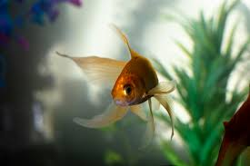

Water Analyzer UAE
Water quality management is a crucial aspect of sustainability and regulatory compliance in the UAE, particularly in industries like municipal water treatment, desalination plants, oil & gas, and industrial manufacturing. Agua Instruments Private Limited provides high-precision water analyzers designed for online water quality monitoring, process control, and continuous environmental assessment.
Our advanced water analysis solutions ensure accurate, real-time data collection to maintain compliance with UAE environmental regulations, enhance operational efficiency, and protect natural water resources. Whether it’s drinking water, industrial effluents, or environmental monitoring, our state-of-the-art analyzers deliver reliable results to help businesses and authorities make informed decisions.

Where are Water Analyzers Used in the UAE?
Our water analyzers cater to a wide range of industrial, municipal, and environmental applications, ensuring water quality meets regulatory standards and operational requirements.
- Water Pollution Detection: Identifies contaminants such as heavy metals, chemicals, and organic pollutants affecting UAE’s water resources.
- Water Treatment Monitoring: Ensures optimal performance in municipal water plants, desalination facilities, and industrial water treatment units.
- Effluent Water Analysis: Monitors wastewater discharge to ensure compliance with UAE environmental laws and sustainability standards.
- Industrial Water Monitoring: Helps industries like oil & gas, food processing, power plants, and chemical manufacturing maintain water quality.
- Multi-Parameter Water Analysis: Enables simultaneous measurement of pH, turbidity, dissolved oxygen, conductivity, and other critical water parameters.
Why Choose Agua Instruments for Water Analyzers in UAE?
As a leading water analyzer provider in UAE, Agua Instruments offers best-in-class technology and customized solutions for real-time water quality monitoring.
Advanced Technology
Our analyzers use high-precision sensors, IoT integration, and AI-driven analytics for accurate and real-time monitoring.
Regulatory Compliance
We help industries meet UAE’s strict environmental and health regulations, ensuring water safety.
Real-Time Water Analysis
Get instant insights and alerts to prevent water contamination and operational disruptions.
Customizable Solutions
Tailor-made water analysis systems designed to meet industry-specific needs in UAE’s diverse sectors.
Comprehensive Support
Expert consultation, installation, calibration, maintenance, and technical assistance to ensure smooth operation.
Cost-Effective & Reliable
Long-lasting performance, low maintenance costs, and precise water analysis at competitive prices.

Continuous online monitoring of drinking water to ensure potability and regulatory compliance. Analysis of disinfection efficiency, chlorine levels, and microbial contamination.

Ensures compliance with UAE’s wastewater discharge regulations. Monitors effluent treatment processes in factories, power plants, and chemical industries.

Measures salinity levels, total dissolved solids (TDS), and pH in desalination processes. Helps optimize membrane filtration efficiency and prevent scaling.

Monitors process water and wastewater to meet stringent UAE environmental laws. Analyzes hydrocarbon contamination, dissolved gases, and chemical oxygen demand (COD).

Ensures optimal water conditions for crop irrigation. Prevents excess nutrient buildup (nitrate, phosphate) that may harm soil health.

Monitors oxygen levels, temperature, and ammonia concentrations for sustainable fish farming. Prevents water contamination and maintains aquatic health.

Ensures safe chlorine and pH levels in swimming pools, water parks, and hotel water facilities. Prevents bacterial growth and chemical imbalances.